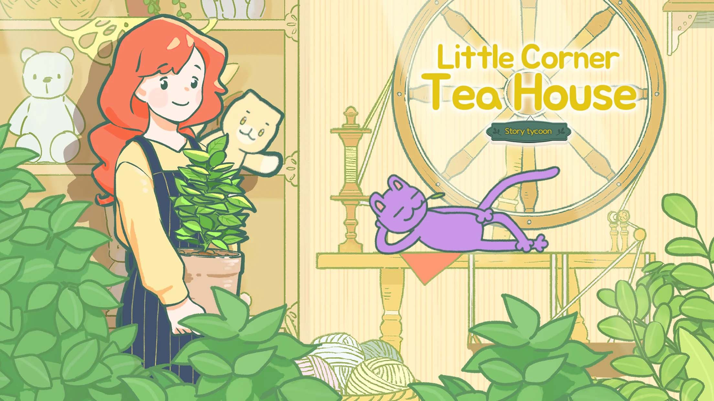

Little Corner Tea House

{kind=link}
{kind=link}
{kind=link}
{kind=link}
{kind=link}
{kind=link}
{kind=link}
Welcome to the little corner tea house! Server tea, coffee & more to give people a place to enjoy peace.
Game Introduction
Little Corner Tea House is a casual simulation game where you can make favorite drinks and talk with different customers to relax.
Story
Our protagonist, Hana, runs a corner tea house independently as a part-time worker. You will help Hana make various drinks, grow many raw materials, make your own unique dolls, decorate your house, etc. While entertaining, you can also listen to the interesting stories from different customers. What kind of wonderful and warm story will happen in this vibrant house? Waiting for you to START!
Game Features
Real Planting and Simulation
EXPERIENCE the real planting process: Seeding! Picking! Drying! Baking! Harvesting! You will pay attention to every growth process of your tea plants. Manage your Tea house to dominate the cooking simulator game universe. Using those materials to make various drinks to satisfy your customers. and Don't forget to Remember your customer's preference, it's a great support to your business.
Fun Ordering Mode
PLAY interesting guess to get the customer's needs. If there is a customer says "Merry Clouds", what drink do you think of? Any drink with cream? Different customers will come up with all kinds of drink riddles ~ All you need to do is guess their real order and then make drinks for them.
Various Drinks to Unlock
COOK hundreds of favorite drinks from around the world! There are more than 200 kinds of drinks such as spice tea, oolong tea, jam tea, and even a variety of coffee. Let's make your unique drinks!
Immersive Game Experience
You can fully RELAX here! Enjoy quiet and gentle music, listen to different customers' stories and watch some good Illustrated stories. Quiet your mind in the game world!
Rich Season Theme Events
COLLECT rich game resources in different season events. Remember to take part in every cute season event: Amusement Park, Steampunk City, Greek Roman Mythology, Romantic Renaissance and other 70+ Season Theme Events await you.
DIY Your Unique Doll and Decorate your House
There are no limits to your creativity in the ga me. DESIGN your cute dolls freely and decorate your shop as you like. Just make your own special tea house.
Plentiful Themed Adventures
It's never boring in the game. Start a unique journey with your doll to get plentiful resources from the adventures. There are so many themed adventures you can choose, such as Sunny Island Adventure(Spring), Hana's Diary Adventure(Summer) and Memory Clod Garden Adventure(Autumn), etc.